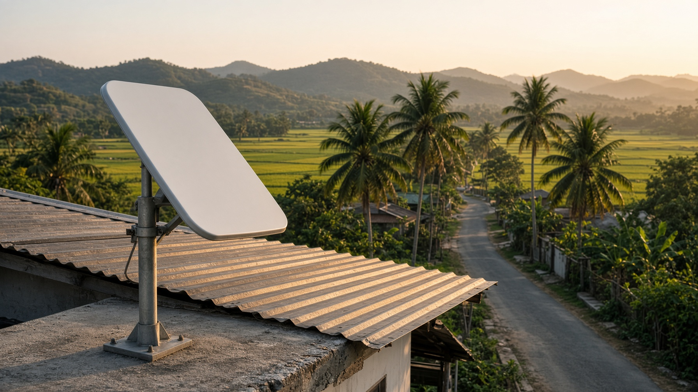
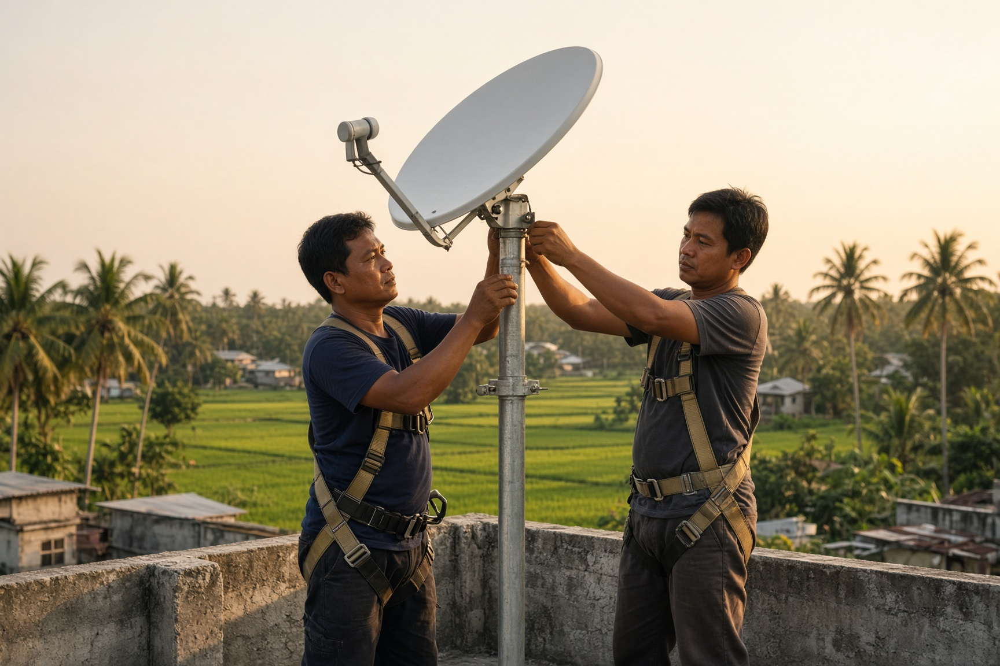

Philippines · remote barangays
One connection.
Whole barangay.
One connection, shared across a whole barangay. Buklod puts a Starlink Local Priority link on a host roof and spreads it about a kilometer with an outdoor radio — 50 to 100 households at ₱400–₱600 a month. You own the equipment. The host gets free internet and a fee.

A host roof with a clear view of the sky. The sector antenna does the rest.
You operate
You buy the kit, pick the roof, register to charge for internet, and keep every peso of voucher revenue. The standing bills are the satellite plan, the host fee, and power.
A host lends the roof
Free internet plus ₱1,500–₱2,500 a month for a good location. They do not own the gear and they do not take a cut of the ₱50,000 book.
Capital builds sites
About ₱150,000,000 of equipment for 1,000 barangays. The guide suggests raising ₱180,000,000–₱200,000,000 so the fill-up months are funded too.
The calm month is not every month
Same site. Three very different bills.
Starlink, the host, and baseline upkeep are ₱12,400 before anyone renews. You need about 25 paying users at ₱500 just to cover that. A storm does not pause the invoice.
Calm month
A full book and only the standing bills. This is the month the guide’s profit figure comes from.
Profit · 100 users · costs ₱12,400
Tight month
Seventy users pay, 8% of billings never clear, upkeep jumps, and a visit needs parts.
Profit · 70 users · costs ₱16,900
Bad month
About 40 users pay. A storm week or a site that never filled, plus an ₱8,000 repair. The satellite bill still arrives in full.
Loss · 40 users · costs ₱24,400

An easy site is a day. A remote site is two to four.
How a site is built
One business link. Then a radio.
The buyer is a household, not a headline. Monthly, prepaid, ₱400–₱600.